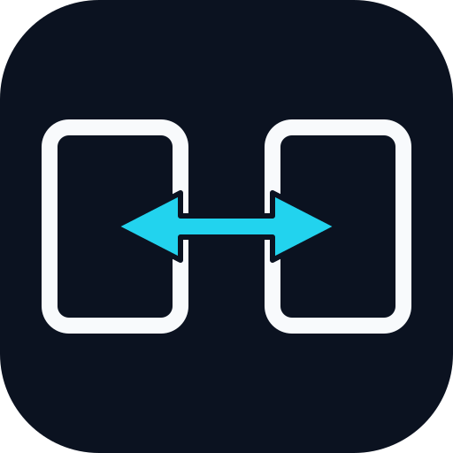
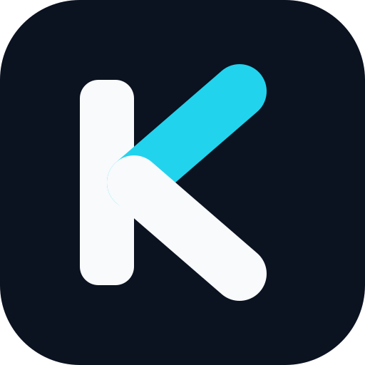
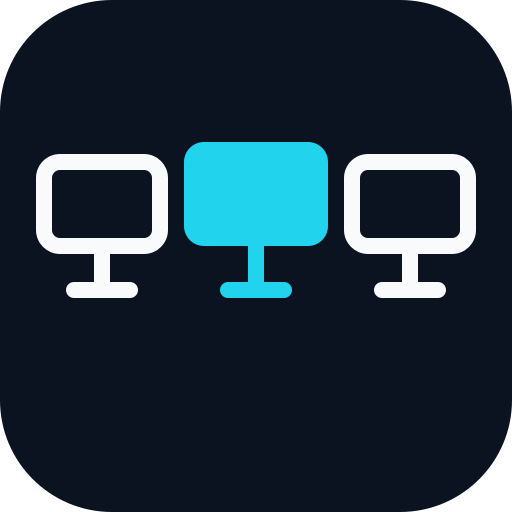
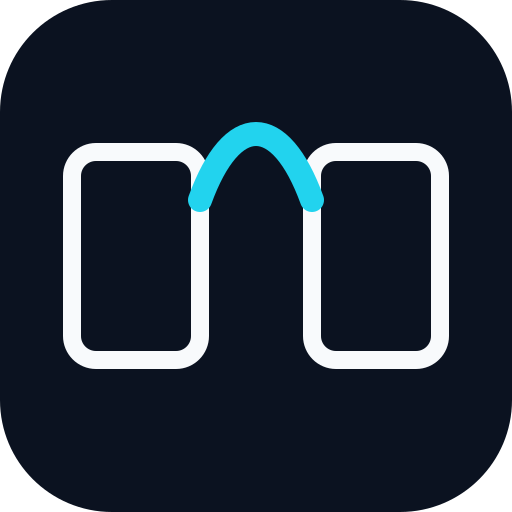
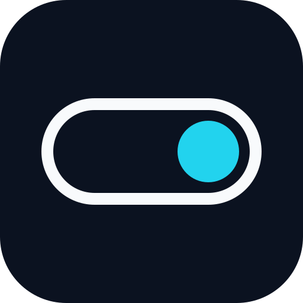

定案版本：兩個螢幕輪廓，中間是左右雙向箭頭；兩個箭頭各跨過左右螢幕內側的一半。深藍底 + 青色重點，適合系統匣、安裝檔與 App Icon。

兩個螢幕輪廓，中間以左右雙向箭頭表示雙向切換。最直接表達「滑過去就切換」，辨識度高，適合當主要圖示。

用螢幕邊框與輸入線條構成 K。最抽象、最像一個「品牌」，在 16 px 與單色印刷時最清楚。

三個節點，中間以青色標示主控端。直接對應「左 / 中 / 右」的電腦位置，適合作為產品圖示。

兩個螢幕以弧線橋接，語氣較柔和、友善。適合希望品牌不要那麼「硬科技」的方向。

一顆極簡 toggle。最抽象、最安靜，像一個系統工具而不是「螢幕共享軟體」；缺點是與 KVM 的連結較弱，需要靠名稱補足。